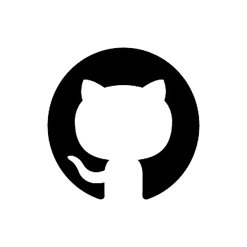

WarpGates Studio est une entreprise de développement et d’édition de jeux vidéo. Celle-ci fut fondée en 2023, par 5 épitéens, dans le but d’offrir un espace créatif d’innovation et d’assouvir la passion du jeux vidéo des élèves. Ces valeurs sont tout d’abord une autonomie totale des développeur afin de proposer au plus large public une experience inoubliable à travers d’exellents jeux.
Noah Abi Chahla : Chef de projet 
Corentin Del Pozo : Superviseur Technique